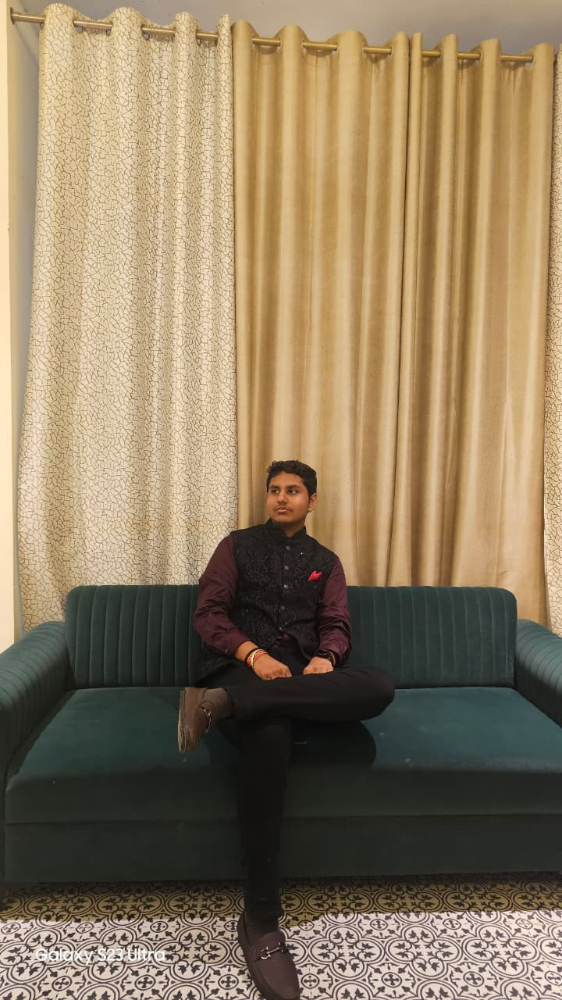

A first-year Computer Science student passionate about coding, web design, and tech exploration.
I’m a B.Tech student at Jaypee University of Engineering & Technology, Guna, with a deep interest in technology, innovation, and continuous learning. I enjoy applying theoretical knowledge to real-world challenges and constantly work on improving my skills through academic projects, certifications, and hands-on practice. I have learned C programming, HTML, and CSS, which have helped me build a strong foundation in problem-solving and web development. Whether collaborating in a team or working independently, I bring curiosity, focus, and a solution-oriented mindset to every task. Currently, I’m exploring opportunities to grow in the tech and engineering domain through internships, personal projects, and collaborations. I’m always open to connecting with like-minded peers, mentors, and professionals to learn, share ideas, and create impactful projects.
A personal portfolio site made with HTML and CSS (this one!).
A Amazon website clone made with HTML, CSS
An intelligent AI-powered lecture assistant built with Lovable AI to help students learn efficiently through real-time insights and support.
Email: jeevanshtalwar2020@gmail.com